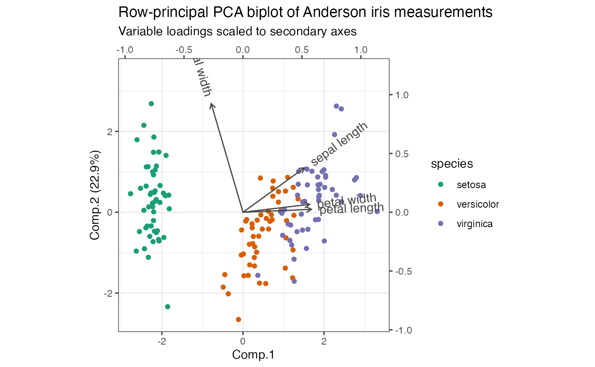
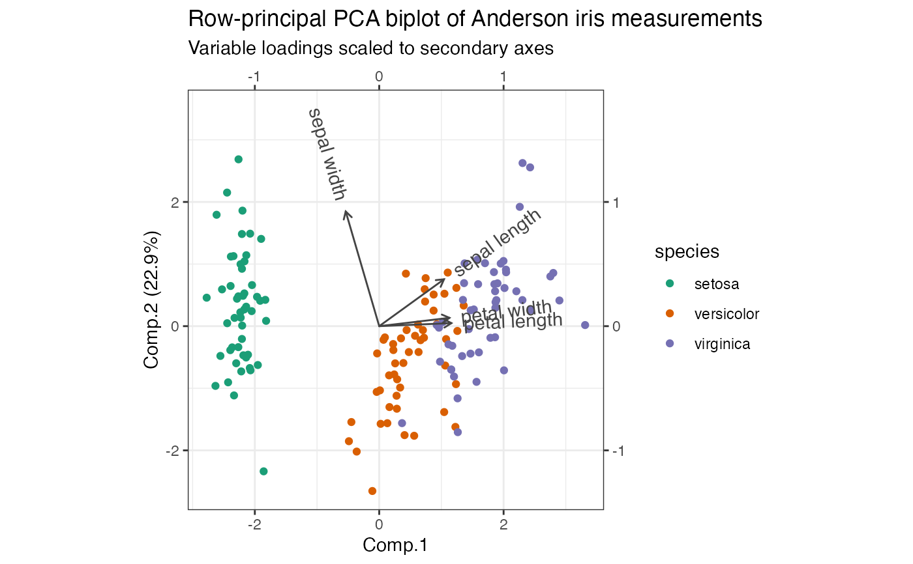
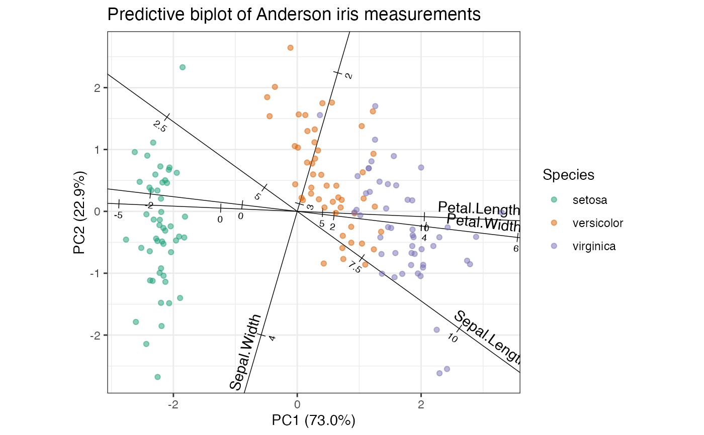

Biplots following the grammar of graphics
ggbiplot.RdBuild a biplot visualization from ordination data wrapped as a tbl_ord object.
ggbiplot( ordination = NULL, mapping = aes(x = 1, y = 2), xlim = NULL, ylim = NULL, expand = TRUE, clip = "on", axis.percents = TRUE, sec.axes = NULL, scale.factor = NULL, scale_u = NULL, scale_v = NULL, ... ) ord_aes(ordination, ...)
Arguments
| ordination | A tbl_ord. |
|---|---|
| mapping | List of default aesthetic mappings to use for the biplot. The
default assigns the first two coordinates to the aesthetics |
| xlim | Limits for the x and y axes. |
| ylim | Limits for the x and y axes. |
| expand | If |
| clip | Should drawing be clipped to the extent of the plot panel? A
setting of |
| axis.percents | Whether to concatenate default axis labels with inertia percentages. |
| sec.axes | Matrix factor character to specify a secondary set of axes. |
| scale.factor | Numeric value used to scale the secondary axes against
the primary axes; ignored if |
| scale_u, scale_v | Either the character name of a numeric variable in
|
| ... | Additional arguments passed to |
Details
ggbiplot() produces a ggplot object from a tbl_ord
object ordination. The baseline object is the default unadorned
"ggplot"-class object p with the following differences from what
ggplot2::ggplot() returns:
p$mappingis augmented with.matrix = .matrix, which expects either.matrix = "u"or.matrix = "v"from the biplot.p$coordinatesis defaulted toggplot2::coord_equal()in order to faithfully render the geometry of an ordination. The optional parametersxlim,ylim,expand, andclipare passed tocoord_equal()and default to its ggplot2 defaults.When
xoryare mapped to coordinates ofordination, and ifaxis.percentsisTRUE,p$labels$xorp$labels$yare defaulted to the coordinate names concatenated with the percentages of inertia captured by the coordinates.pis assigned the class"ggbiplot"in addition to"ggplot". This serves no functional purpose currently.
Furthermore, the user may feed single integer values to the x and y
aesthetics, which will be interpreted as the corresponding coordinates in the
ordination.
ord_aes() is a convenience function that generates a full-rank set of
coordinate aesthetics .coord1, .coord2, etc. mapped to the
shared coordinates of the ordination object, along with any additional
aesthetics that are processed internally by ggplot2::aes().
Biplot layers
ggbiplot() uses ggplot2::fortify() internally to produce a single data
frame with a .matrix column distinguishing the subjects ("u") and
variables ("v"). The stat layers stat_u() and stat_v() simply filter
the data frame to one of these two.
The geom layers geom_u_*() and geom_v_*() call the corresponding stat in
order to render plot elements for the corresponding matrix \(U\) or
\(V\). geom_biplot_*() selects a default matrix based on common practice,
e.g. \(U\) for points and \(V\) for arrows.
See also
Examples
# Regression analysis of Motor Trend design and performance data mtcars %>% scale(scale = FALSE) %>% as.data.frame() %>% lm(formula = mpg ~ wt + cyl) %>% as_tbl_ord() %>% augment() %>% mutate_u(influence = .wt.res^2) %>% print() -> mtcars_lm#> # A tbl_ord of class 'lm': (32 x 3) x (1 x 3)' #> # 3 coordinates: (Intercept), wt, cyl #> # #> # U: [ 32 x 3 | 8 ] #> `(Intercept)` wt cyl | .name .hat .sigma .cooksd #> | <chr> <dbl> <dbl> <dbl> #> 1 1 -0.597 -0.188 | 1 Mazd… 0.0548 2.60 5.08e-3 #> 2 1 -0.342 -0.188 | 2 Mazd… 0.0376 2.61 4.44e-4 #> 3 1 -0.897 -2.19 | 3 Dats… 0.0798 2.52 5.68e-2 #> 4 1 -0.00225 -0.188 | 4 Horn… 0.0321 2.61 1.80e-3 #> 5 1 0.223 1.81 | 5 Horn… 0.0912 2.58 2.35e-2 #> # … with 27 more rows, and 4 more #> # U: [ 32 x 3 | 8 ]# variables: .wt.res <dbl>, #> `(Intercept)` wt cyl | # .fit <dbl>, .se.fit <dbl>, #> | # influence <dbl> #> # #> # V: [ 1 x 3 | 1 ] #> `(Intercept)` wt cyl | .name #> | <chr> #> 1 6.72e-16 -3.19 -1.51 | 1 mpgmtcars_lm %>% ggbiplot(aes(x = wt, y = cyl, intercept = `(Intercept)`)) + geom_u_point(aes(color = influence)) + geom_v_vector() + geom_v_isolines(axes = 1, by = 5) + ggtitle( "Weight isolines with data colored by importance", "Regressing mpg onto weight and number of cylinders" )# Unscaled PCA and two-scaled biplot of Anderson iris data iris[, -5] %>% princomp() %>% as_tbl_ord() %>% confer_inertia(1) %>% mutate_u(species = iris$Species) %>% mutate_v(measure = gsub("\\.", " ", tolower(names(iris)[-5]))) %>% print() -> iris_pca#> # A tbl_ord of class 'princomp': (150 x 4) x (4 x 4)' #> # 4 coordinates: Comp.1, Comp.2, ..., Comp.4 #> # #> # U: [ 150 x 4 | 1 ] #> Comp.1 Comp.2 Comp.3 ... | species #> | <fct> #> 1 -2.68 0.319 0.0279 | 1 setosa #> 2 -2.71 -0.177 0.210 ... | 2 setosa #> 3 -2.89 -0.145 -0.0179 | 3 setosa #> 4 -2.75 -0.318 -0.0316 | 4 setosa #> 5 -2.73 0.327 -0.0901 | 5 setosa #> # … with 145 more rows #> # #> # V: [ 4 x 4 | 1 ] #> Comp.1 Comp.2 Comp.3 ... | measure #> | <chr> #> 1 0.361 0.657 0.582 | 1 sepal length #> 2 -0.0845 0.730 -0.598 ... | 2 sepal width #> 3 0.857 -0.173 -0.0762 | 3 petal length #> 4 0.358 -0.0755 -0.546 | 4 petal widthiris_pca %>% ggbiplot(aes(color = species), sec.axes = "v", scale.factor = 3) + theme_bw() + scale_color_brewer(type = "qual", palette = 2) + geom_u_point() + geom_v_vector(color = "#444444") + geom_v_text_radiate(aes(label = measure), color = "#444444") + ggtitle( "Row-principal unscaled PCA biplot of Anderson iris data", "Variable loadings scaled to secondary axes" )# Logistic SVD of Sanderson finches data finches %>% t() %>% logisticSVD() %>% as_tbl_ord() %>% augment() %>% print() -> finches_lsvd#>#> # A tbl_ord of class 'lsvd': (17 x 2) x (13 x 2)' #> # 2 coordinates: LSC1 and LSC2 #> # #> # U: [ 17 x 2 | 1 ] #> LSC1 LSC2 | .name #> | <chr> #> 1 -29.6 -27.3 | 1 Seymour #> 2 -29.6 -27.3 | 2 Baltra #> 3 39.4 22.9 | 3 Isabella #> 4 39.9 40.6 | 4 Fernandina #> 5 20.2 3.50 | 5 Santiago #> # … with 12 more rows #> # #> # V: [ 13 x 2 | 2 ] #> LSC1 LSC2 | .name .mu #> | <chr> <dbl> #> 1 0.233 0.231 | 1 Large ground finch 9.02 #> 2 0.223 -0.216 | 2 Medium ground finch 5.97 #> 3 0.164 -0.318 | 3 Small ground finch 9.86 #> 4 0.0787 0.548 | 4 Sharp-beaked ground finch 6.88 #> 5 0.240 -0.451 | 5 Cactus ground finch 5.85 #> # … with 8 more rowsfinches_lsvd %>% ggbiplot( aes(x = LSC1, y = LSC2, label = .name), sec.axes = "v", scale.factor = 100 ) + geom_u_vector(alpha = .5, color = "darkred") + geom_u_text_radiate(size = 3, color = "darkred") + geom_v_label(size = 3, alpha = .5, color = "royalblue3") + ggtitle( "Logistic SVD of the Galapagos island finches", "Islands (finches) scaled to the primary (secondary) axes" )# Logistic PCA of Sanderson finches data finches %>% t() %>% logisticPCA() %>% as_tbl_ord() %>% augment() %>% print() -> finches_lpca#> # A tbl_ord of class 'lpca': (17 x 2) x (13 x 2)' #> # 2 coordinates: LPC1 and LPC2 #> # #> # U: [ 17 x 2 | 1 ] #> LPC1 LPC2 | .name #> | <chr> #> 1 2.02 -10.4 | 1 Seymour #> 2 2.02 -10.4 | 2 Baltra #> 3 -11.5 4.62 | 3 Isabella #> 4 -8.64 7.51 | 4 Fernandina #> 5 -10.6 1.65 | 5 Santiago #> # … with 12 more rows #> # #> # V: [ 13 x 2 | 2 ] #> LPC1 LPC2 | .name .mu #> | <chr> <dbl> #> 1 -0.190 0.372 | 1 Large ground finch 3.00 #> 2 -0.365 -0.162 | 2 Medium ground finch 1.10 #> 3 -0.279 -0.281 | 3 Small ground finch 1.91 #> 4 0.0389 0.568 | 4 Sharp-beaked ground finch 1.79 #> 5 -0.353 -0.361 | 5 Cactus ground finch -0.451 #> # … with 8 more rowsfinches_lpca %>% ggbiplot( aes(x = LPC1, y = LPC2, label = .name), sec.axes = "v", scale.factor = 50 ) + geom_u_vector(alpha = .5, color = "darkred") + geom_u_text_radiate(size = 3, color = "darkred") + geom_v_label(size = 3, alpha = .5, color = "royalblue3") + ggtitle( "Logistic PCA of the Galapagos island finches", "Islands (finches) scaled to the primary (secondary) axes" )# Convex logistic PCA of Sanderson finches data finches %>% t() %>% # omit finches present on every island {.[, ! apply(., 2, all), drop = FALSE]} %>% convexLogisticPCA() %>% as_tbl_ord() %>% augment() %>% print() -> finches_clpca#> # A tbl_ord of class 'clpca': (17 x 2) x (12 x 2)' #> # 2 coordinates: LPC1 and LPC2 #> # #> # U: [ 17 x 2 | 1 ] #> LPC1 LPC2 | .name #> | <chr> #> 1 -5.81 -9.59 | 1 Seymour #> 2 -5.81 -9.59 | 2 Baltra #> 3 10.0 3.39 | 3 Isabella #> 4 7.81 6.94 | 4 Fernandina #> 5 9.14 0.958 | 5 Santiago #> # … with 12 more rows #> # #> # V: [ 12 x 2 | 2 ] #> LPC1 LPC2 | .name .mu #> | <chr> <dbl> #> 1 0.232 0.275 | 1 Large ground finch 1.54 #> 2 0.355 -0.293 | 2 Medium ground finch 1.18 #> 3 0.210 -0.315 | 3 Small ground finch 1.54 #> 4 0.110 0.568 | 4 Sharp-beaked ground finch 0.357 #> 5 0.275 -0.444 | 5 Cactus ground finch 0.875 #> # … with 7 more rowsfinches_clpca %>% ggbiplot( aes(x = LPC1, y = LPC2, label = .name), sec.axes = "v", scale.factor = 50 ) + geom_u_vector(alpha = .5, color = "darkred") + geom_u_text_radiate(size = 3, color = "darkred") + geom_v_label(size = 3, alpha = .5, color = "royalblue3") + ggtitle( "Convex logistic PCA of the Galapagos island finches", "Islands (finches) scaled to the primary (secondary) axes" )